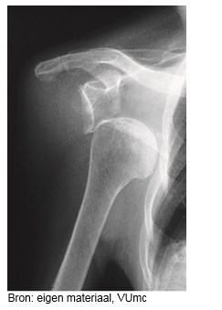
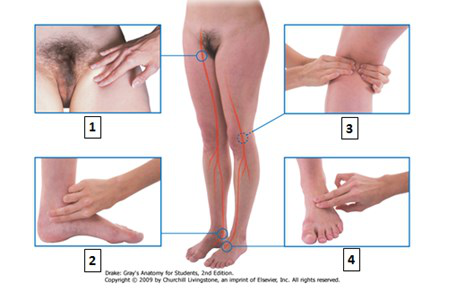
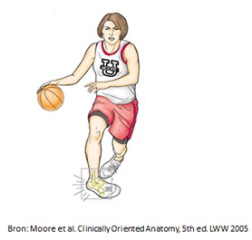
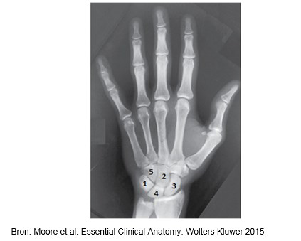
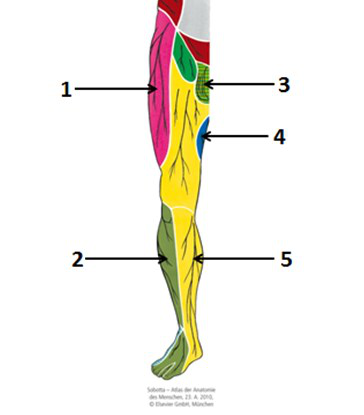
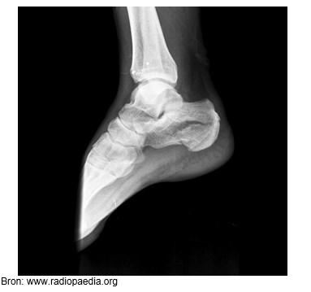

Vraag 1
Welke zenuw ligt kwetsbaar achter de mediale epicondylus van de humerus?
Vraag 2
Kies de juiste alternatieven.
Welke hoofdfunctie hebben de volgende spieren? Kies het juiste alternatief. m. levator scapulae: — m. flexor carpi radialis:
Vraag 3
Zie bovenstaande röntgenfoto. Voor schade aan welke zenuw bent u specifiek bedacht op basis van de afwijking op de röntgenfoto?

Vraag 4

Sleep de arterie op de juiste plaats waar deze gepalpeerd wordt. Kies per genummerde plek (zie afbeelding) de juiste arterie.
Sleep een optie naar de bijbehorende rij, of tik eerst op een kaart en dan op een rij.
Plek 1
Sleep hier naartoe
Plek 2
Sleep hier naartoe
Plek 3
Sleep hier naartoe
Plek 4
Sleep hier naartoe
Vraag 5
Bekijk de afbeelding van een basketbalster die een enkeltrauma oploopt.
Voor letsel aan welk ligament bent u nu het meest bedacht?

Vraag 6
Zie bovenstaande afbeelding. Met welk nummer is het os scaphoideum aangeduid?

Vraag 7

Kies de juiste alternatieven.
Met welk nummer wordt het sensibele gebied van de zenuw aangeduid? n. cutaneus femoris lateralis: — n. saphenus:
Vraag 8
Kies de juiste alternatieven.
Welke hoofdfunctie hebben de volgende spieren in het heupgewricht? Kies het juiste alternatief. m. iliopsoas: — m. semitendinosus:
Vraag 9
Kies de juiste alternatieven.
Welke hoofdfunctie hebben de volgende spieren in het kniegewricht? Kies het juiste alternatief. m. semimembranosus: — m. quadriceps femoris:
Vraag 10
Zie bovenstaande afbeelding. Welke afwijking is op de röntgenfoto te zien?

Vraag 11
Wat is de klinisch-anatomische relevantie van de bursa suprapatellaris?
Vraag 12
Een 55-jarige man, bekend met diabetes mellitus, presenteert zich op de spoedeisende hulp (SEH) met een sinds enkele dagen toenemend pijnlijk, rood, dik, gespannen rechter kniegewricht. De knie wordt in lichte flexie gehouden.
Welke diagnostiek overweegt u?
Vraag 13
Een 27-jarige sportvrouw heeft sinds enkele maanden haar trainingsintensiteit verhoogd in aanloop van de komende Dam tot Damloop. Ze ervaart echter sinds kort een toenemende belastingafhankelijke pijn en een harde zwelling aan de voorzijde, ongeveer in het midden van haar linker onderbeen, die het verder trainen onmogelijk maakt.
Wat is de meest waarschijnlijke diagnose?
Vraag 14
Wat is de meest voorkomende instabiliteit van de gewrichten rondom de schouder?
Vraag 15
Welk kenmerk hoort bij een 'frozen shoulder'?
Vraag 16
Een 11-jarig meisje presenteert zich met geringe maar toenemende pijnklachten aan de laterale zijde van haar rechter elleboog. Ze doet intensief aan turnen, waarbij ze haar ellebogen intensief belast. Soms lijkt het alsof haar elleboog 'op slot' zit. Bij onderzoek treft u een geringe strekbeperking van de elleboog aan.
Wat is de meest waarschijnlijke diagnose?
Vraag 17
Een 65-jarige vrouw presenteert zich met pijn en startpijn in haar rechter lies. Bij lichamelijk onderzoek lijken alle bewegingen in het heupgewricht ongestoord, maar toch is de handgreep van Thomas positief.
Waar duidt dit op?
Vraag 18
Bij een 75-jarige vrouw met in de voorgeschiedenis diabetes type 2 werd 3 jaar geleden met succes een totale heup prothese rechts geplaatst. Nu presenteert ze zich opnieuw op uw spreekuur met toenemende pijnklachten in haar rechter lies, het lopen is pijnlijk en ze voelt zich sinds enkele weken niet lekker met soms koorts.
Wat adviseert u het allereerst?
Vraag 19
De laterale en mediale meniscus in de knie bewegen mee tijdens de glij-rolbeweging die de femurcondyl over het tibiaplateau maakt bij flexie-extensie. Een meniscus ruptuur van de knie komt vaak voor bij sporters.
Waar worden de meeste rupturen van een meniscus hierbij gezien?
Vraag 20
Een profvoetballer bij een beroemde voetbalclub in Amsterdam heeft tijdens de laatste wedstrijd tegen een voetbalclub uit Rotterdam een flexie-valgus-exorotatie trauma van zijn rechter knie doorgemaakt en hierbij een voorste kruisband letsel opgelopen.
Welke behandeling voor een voorste kruisband reconstructie past hierbij?
Vraag 21
Het enkelgewricht wordt zowel lateraal als mediaal stabiel gehouden door stevige ligamenten.
Welk van onderstaande ligamenten vertoont bij een positieve voorste schuiflade test meestal laxiteit?
Vraag 22
Welk kenmerk hoort bij coccygodynie?
Vraag 23
Op uw spreekuur als huisarts komt meneer Jansen van 30 jaar. Hij heeft sinds een week last van zijn rechterschouder. U wilt zijn schouder onderzoeken en vraagt hem om zijn rechterarm gestrekt opzij te houden, de handpalm naar boven te draaien en dan de arm langzaam omhoog te bewegen.
Welke bewegingen maakt de arm hierbij?
Vraag 24
Op uw spreekuur als huisarts komt de meneer de Wilde. Hij is 45 jaar en werkt als tegelzetter. Sinds 2 weken heeft hij pijn aan zijn rechterknie. Er is geen duidelijk trauma geweest. U vindt de knie ook wat dik. Bij het lichamelijk onderzoek ziet u een zwelling aan de voorzijde van de patella. Er is geen sprake van een hydrops. Flexie is vanaf 130 graden pijnlijk, maar wel mogelijk. Extensie is goed mogelijk.
Wat is de meest waarschijnlijke diagnose?
Vraag 25
Op uw spreekuur als huisarts komt Julius de Roode, 30 jaar. Hij heeft gisteren tijdens een voetbaltraining zijn rechter enkel verzwikt. Hij kan zijn enkel nog wel belasten, maar heeft veel pijn bij het lopen. Bij het lichamelijk onderzoek ziet u een zwelling bij de laterale malleolus. U ziet geen hematoom. Er is geen drukpijn bij de achterzijde van de beide malleoli. Er is geen drukpijn bij het os naviculare en ook niet aan de basis van het os metatarsale V. Er is wel drukpijn aan de voorzijde van de laterale malleolus.
Wat is nu het juiste beleid?
Vraag 26
In 2020 is de wereld getroffen door een pandemie van het Coronavirus.
Wie heeft de regie bij de bestrijding hiervan in Nederland?
Vraag 27
De zorg van dak- en thuislozen is ondergebracht bij de gemeente.
Volgens welke wet moet deze zorg worden uitgevoerd?
Vraag 28
Er worden regelmatig keuringen uitgevoerd van o.a. zwembaden op de aanwezigheid van pathogene micro-organismen.
Door welke instantie worden deze keuringen uitgevoerd?
Vraag 29
In de jeugdgezondheidszorg worden adviezen gegeven in het tegengaan van de buikligging bij de zuigeling.
Deze adviezen dienen ter preventie van welke aandoening?
Vraag 30
In welk zorgstelsel is toegankelijkheid van zorg een knelpunt?
Vraag 31
In welk zorgstelsel heeft de verzekeraar de grootste sturingsbevoegdheid?
Vraag 32
Welk determinant type levert de grootste bijdrage aan de ziektelast van diverse aandoeningen?
Vraag 33
Mevrouw De Haan heeft een operatie aan haar hand ondergaan. Hierbij is helaas een pees beschadigd, waardoor ze haar hand nu minder goed kan gebruiken. Ze wil hiervoor een schadevergoeding.
Bij welke rechter kan zij nu een procedure beginnen?
Vraag 34
Er zijn handelingen die alleen door een beroepsbeoefenaar die in de wet wordt genoemd mogen worden uitgevoerd, zoals puncties.
In welke wet zijn deze handelingen vastgelegd?
Vraag 35
Mevrouw Michelse is opgenomen in het ziekenhuis en is ontevreden over haar behandeling van de logopediste.
Bij wie kan zij hierover een klacht indienen?
Vraag 36
Mevrouw Vriend werkt in het ziekenhuis en werkt zonder COVID-beschermingsmiddelen. Een patiënt van haar is verkouden en positief getest op Covid. Mevrouw Vriend is nu ook verkouden en er wordt door haar bedrijfsarts een COVID-test afgenomen. Helaas blijkt deze test ook positief te zijn.
Bij welke twee instanties moet deze positieve uitslag gemeld worden door de bedrijfsarts?
Meerdere antwoorden mogelijk.
Vraag 37
Meneer Brand gaat bij de brandweer werken. Bij zijn aanstelling wordt door de bedrijfsarts een aanstellingskeuring uitgevoerd.
Wat is het doel van deze aanstellingskeuring?
Vraag 38
Wat bepaalt de hoogte van de WIA uitkering?
Vraag 39
Allochtonen blijken oververtegenwoordigd in de WIA/WAO ten opzichte van autochtonen. Wolffers geeft hiervoor mogelijke verklaringen.
Welke twee verklaringen worden hierbij genoemd?
Meerdere antwoorden mogelijk.
Vraag 40
Wat is een belangrijk kenmerk van het Nederlandse zorgverzekeringsstelsel?
Vraag 41
Radicale verschuivingen in doodsoorzaakpatronen in de afgelopen decennia worden omschreven met de term epidemiologische transitie. Zet de volgende fasen in de juiste volgorde (1 = de oudste fase).
Sleep een optie naar de bijbehorende rij, of tik eerst op een kaart en dan op een rij.
tijdperk van epidemieën en hongersnoden
Sleep hier naartoe
tijdperk van afnemende pandemieën
Sleep hier naartoe
tijdperk van degeneratieve en door de mens veroorzaakte aandoeningen
Sleep hier naartoe
tijdperk van delayed degenerative diseases
Sleep hier naartoe
Vraag 42
Tot welke omgeving behoort het Coronavirus als omgevingsdeterminant?
Vraag 43
Kies de juiste alternatieven.
Kies het juiste alternatief. Infectieziekten leveren jaarlijks wereldwijd een bijdrage aan het aantal jaarlijkse sterfgevallen dan chronische niet-overdraagbare aandoeningen.
Vraag 44
Kies de juiste alternatieven.
Kies de juiste alternatieven. De levensverwachting van mannen is dan die van vrouwen en de levensverwachting zonder chronische ziekte is voor mannen dan die voor vrouwen.
Vraag 45
In het VTV 2018 wordt dementie als een aandoening met de hoogste ziektelast in 2040 benoemd.
Welke verklaring ligt hieraan ten grondslag?
Vraag 46
Gezondheidsverschillen hangen samen met de sociaal economische status (SES).
Welke factoren dragen bij aan de SES? (slechts 1 antwoord is juist)
Vraag 47
Wat is de meest belangrijke preventieve maatregel om beroepshuidaandoeningen te voorkomen?
Vraag 48
Meneer Boer werkt sinds kort in een champignonkwekerij en klaagt over hoesten en benauwdheid vooral als hij aan het werk is. Ook heeft hij koorts.
Wat is de meest waarschijnlijke diagnose?
Vraag 49
Wat is de belangrijkste interventie die de bedrijfsarts kan uitvoeren bij gesignaleerde problemen bij een werknemer na een hartinfarct?
Vraag 50
Wat is een kerndoel van een preventief medisch onderzoek door de bedrijfsarts?
Vraag 51
Vaccinatie bij de recente COVID pandemie is een voorbeeld van?
Vraag 52
Waarvoor is voldoende beweging van ouderen met name van belang?
Vraag 53
Van welk type preventie is 'opsporing en behandeling van hypertensie ter voorkoming van hart en vaatziekten' een voorbeeld?
Vraag 54
Casus (obesitas): Mevrouw Goverts is al langere tijd zwaarlijvig. Tijdens een consult bij haar huisarts stelt deze vast dat ze lijdt aan obesitas. Tijdens het informatie- en adviesgesprek dat volgt geeft de huisarts opties en informatie, maar laat de huisarts mevrouw Goverts zelf tot een geïnformeerde beslissing komen over hoe de obesitas aan te pakken.
Welk gespreksmodel hanteert de arts hier?
Vraag 55
Vervolg casus (obesitas): Mevrouw Goverts geeft tijdens het gesprek aan dat ze de informatie over obesitas en de behandelopties niet goed heeft begrepen en vraagt vervolgens om extra toelichting.
Mag de arts in dit geval gebruik maken van de in de WGBO beschreven 'Therapeutische exceptie'?
Vraag 56
Vervolg casus (obesitas): De huisarts wil mevrouw Goverts over een half jaar graag ter controle terugzien.
In welke fase van gedragsverandering bevindt mevrouw Goverts zich dan idealiter?
Vraag 57
In verband met de COVID-19 pandemie is het dragen van een mondkapje verplicht gesteld.
Om welke omgevingsdeterminant gaat het hier?
Vraag 58
Op je spreekuur verschijnt mevrouw Jansma met haar 2-jarige dochter. Het meisje heeft oorontsteking en koorts. Volgens jou is het voorschrijven van antibiotica de enige behandeloptie.
Welk gespreksmodel gebruik je?
Vraag 59
Kies de juiste alternatieven.
Kies de juiste alternatieven. Michael heeft een enkelblessure gehad, maar de behandeling is nu eindelijk afgelopen. Michael heeft nu een risico op functionele instabiliteit en een risico op recidief enkelletsel in vergelijking tot de situatie voor zijn enkelletsel.
Vraag 60
Er bestaan diverse theorieën over gedragsverandering.
Van welke theorie is de campagne 'AIDS kills' een voorbeeld?